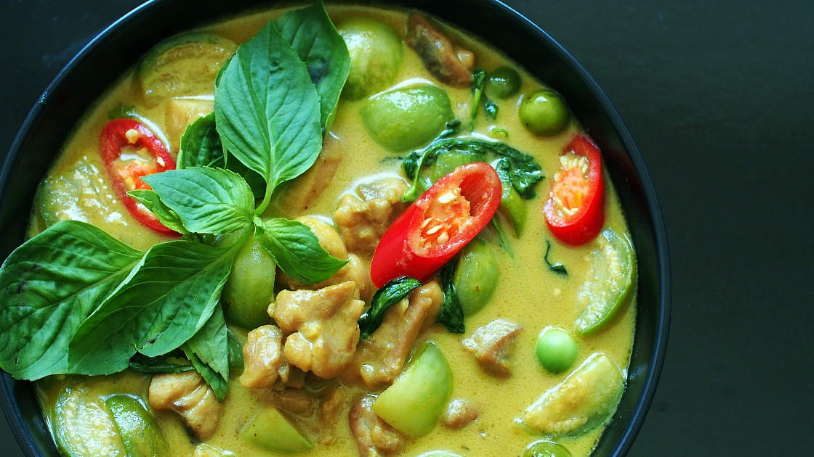

Green Coconut Curry

Description
Nutrient-dense and totally vegan green coconut curry with vegies.
Ingredients
Curry Paste
- 1/2 cup / 40g - Cilantro (coriander) stem & roots
- 1 Tablespoon / 4 to 5 Garlic approx
- 1/2 Tablespoon / 1/2 Inch ginger approx
- 1 Jalapeno / 20g
- Zest of 1 lime / 1/2 Tablespoon
- 1/2 cup / 70g Onion
- 1 Teaspoon Turmeric powder
- 1 Teaspoon Ground Cumin
- 1 Teaspoon Ground Coriander
- 1/4 Teaspoon Cayenne Pepper or to taste (Optional)
- 1/2 Teaspoon salt
Other Ingredients
- 3 cups / 700g Coconut milk
- 1 cup / 250ml Water
- Salt to taste ( I have added 1+1/4 teaspoon pink Himalayan salt)
- 1 cup / 100g Red Bell Pepper - chopped
- 1 cup / 100g Green Bell Pepper - chopped
- 1 cup / 100g Zucchini - chopped
- 1+1/2 cup / 100g Mushrooms - chopped
- 1 cup / 150g Firm Tofu - cut into cubes
- 1 cup / 100g Broccoli (65g) - chopped
- 1 to 1/2 cup / 50 to 100g Snap Peas - remove the strings from the sides and chop in half or leave it whole
- Lime Juice to taste (I have added 1 tablespoon I like it a bit sour)
Steps
- Start by adding cilantro stems/roots, garlic, ginger, jalapeno, onion, lime zest to a blender and make a puree. (Please note: Add only 1/2 tablespoon of ginger, if you add too much the dish will turn bitter. Also, thoroughly wash the cilantro roots and stem to get rid of any dirt.)
- Transfer the puree to a deep pot. Add the spices, cooking oil and cook over medium heat until it forms a thick paste and the oil starts to separate - which means it's nicely roasted. Then add the coconut milk, water, salt and bring it to a boil. Once it starts to boil, reduce the heat to medium-low and cover and cook for about 20 minutes - for the flavours to develop.
- Uncover and add the vegetables and tofu. Turn the heat to medium or medium high (depending on the heat of your stove) and cook for another 5 to 6 minutes uncovered, until the zucchini is just slightly soft but still has a bite to it. Cook the gravy to the desired consistency. Add the broccoli, snap peas and cook for a few seconds and turn off the heat. Please note we don't want to over cook the broccoli/ snap peas, it will continue to cook in the hot gravy even after turning off the heat.
- Enjoy it with freshly steamed rice or as a soup. This recipe is perfect for meal prep and stores well in the fridge for 3 to 4 days.